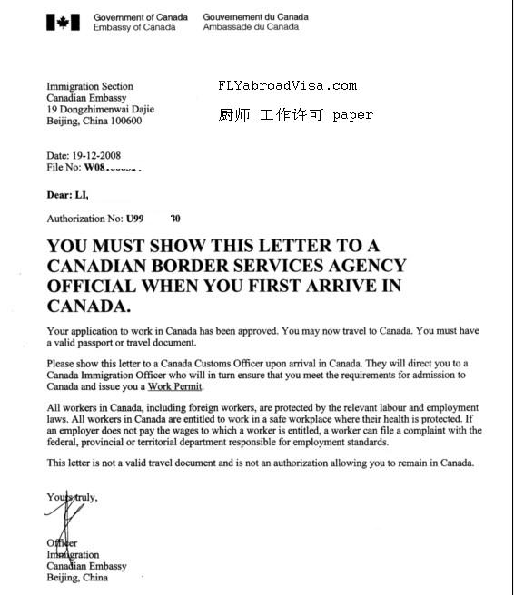

【最新加拿大劳务招工信息】：加拿大劳务招工信息 - FLYabroad 会根据职位需求不定时更新。
加拿大劳务签证，低学历人员实现出国梦想的机会。
加拿大每年都需要从国外引入大批各个层次的劳动力以补充加拿大国内劳力的不足。如果您有专科以上的学历，可以考虑通过技术移民方式移民，如果您的学历较低但还是希望能够有机会到加拿大工作或生活，您可以考虑一下，是否可以通过加拿大劳务的方式出国。
加拿大劳务签证属于工作签证类别，面向的是那些加拿大国内紧缺的工作职位，这些职位对学历和技能的要求较低。常见的加拿大劳务工作包括：厨师，服务员，家政，电焊工，屠宰工，清洁工，农业工，木工，超市员工，汽修，建筑工人，普通工人等。
办理加拿大劳务签证前，申请人必须找到合适的加拿大雇主。加拿大劳务签证一般要求申请人有一定的英语基础（通常能达到普通的英语交流就可以），因此如果您希望出国，英语是一定要掌握一点的；
FLYabroad 提供加拿大工作签证自助服务，因此也就提供加拿大劳务签证的自助服务。如果您已经找到雇主，FLYabroad 可以帮你申请签证；对于某些工种，FLYabroad 也可以帮您找雇主。
FLYabroad 个人代理服务的优势不仅仅在服务费用，更主要的在于极高的成功率、极佳的服务质量和有口皆碑的信誉。FLYabroad 个人提供的签证代理服务个人代理的方式具备一切 DIY 及中介的优点，优势是专业、省心、优质的服务及最低的申请风险。
注：为了增加咨询的针对性和有效性，请先详细填写 FLYabroad 劳务评估表格，劳务在线咨询的 msn、qq 在评估表格中，本站提供的 flyabroad111 的 msn 和 894353901 的 qq 不咨询劳务，谢谢您的理解与合作。有问题可以到 FLYabroad 签证论坛 - 工作签证板块 咨询。
参考：
加拿大工作签证申请程序 ；
加拿大住家保姆 ；
FLYabroad 加拿大工作签证（住家保姆、劳务签证）自助服务及服务费用 。